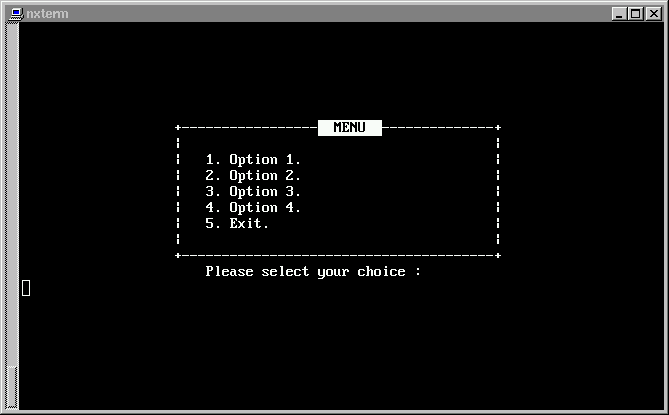

การเขียนโปรแกรมเชลล์ (2)
เนื่องจากการเขียนโปรแกรมเชลล์ หรือ เชลล์สคริปต์ (shell script) นั้นเป็นการนำเอา
คำสั่งต่างๆของระบบมารวมเข้าด้วยกัน โดยมีคำสั่งควบคุมการทำงาน (flow control) คอย
เป็นตัวบังคับและควบคุมรูปแบบของโปรแกรม ดังนั้นหากคุณยังไม่คุ้นเคยกับรูปแบบคำสั่ง
ที่เป็นยูทิลิตี้ของ ลีนุกซ์/ยูนิกซ์ ขอแนะนำให้คุณอ่านเอกสารที่เกี่ยวกับการแนะนำ
ผู้ใช้เบื้องต้น (user-guide) เสียก่อน อย่างน้อยคุณควรจะทำความคุ้นเคยกับโปรแกรม
พวก sort, grep, more หรือ cat
การควบคุมลักษณะของการแสดงผล
เราสามารถส่งรหัสพิเศษ (escape sequence) ไปทำการควบคุมลักษณะการแสดงผลได้
โดยรหัสเหล่านั้นจะขึ้นต้นด้วย รหัสของ escape (\033) ดังนั้นจึงเรียกรหัสชุดเหล่า
นี้ว่า escape sequence คุณสามารถทำการบังคับให้ระบบทำการแสดงผลตัวอักษรแบบกระพริบ
กลับขาวกลับดำ หรือขีดเส้นใต้ได้ ตัวอย่างของรหัสต่างๆ มีดังต่อไปนี้
-
\033[line;colH ตำแหน่งของ prompt จะไปอยู่บนบรรทัด line และคอลัมน์ col
-
\033[2J ลบหน้าจอ (คล้ายกับ tput clear บนยูนิกซ์ หรือ CLS บนดอส)
-
\033[4m เข้าสู่โหมดขีดเส้นใต้ ตัวอักษรที่พิมพ์ต่อจากรหัสชุดนี้จะ
เป็นตัวอักษรที่มีการขีดเส้นใต้ทั้งหมด
-
\033[5m เข้าสู่โหมดกระพริบ (blink)
-
\033[7m โหมดกลับขาวดำ (reverse)
-
\033[m กลับสู่โหมดปกติ
เราสามารถใช้คำสั่ง echo เพื่อทำการส่งรหัสเหล่านี้ได้ สำหรับรหัสของ escape คุณ
สามารถทำได้ โดยการกดปุ่ม Ctrl-v (กดปุ่มคอนโทรลค้างไว้และตามด้วย v) หลังจากนี้
เมื่อเรากดปุ่มไหนจะเป็นการส่งรหัสประจำปุ่มนั้นไปให้ระบบ ในที่นี้จะกดปุ่ม Esc
เมื่อกดแล้วก็จะเห็นเป็นตัวอักษร ^[ ดังนั้นหากต้องการจะส่งรหัสสำหรับเข้าสู่โหมด
กระพริบ คุณก็ต้องกดปุ่ม Ctrl-v ตามด้วยปุ่ม Esc และปุ่ม [, 5, m ตามลำดับ
เมื่อคุณกดรหัสชุดนี้เสร็จสิ้นแล้วคุณจะเห็นเป็นชุดตัวอักษร ^[[5m
ให้ทดลองป้อนคำสั่ง ต่อไปนี้
$ echo ^[[5m
คุณจะสังเกตเห็นว่าเมื่อเราพิมพ์ตัวอักษรหลังจากนี้ เราจะเห็นเป็นตัวอักษรกระพริบ
ทั้งหมด (สำหรับจอที่มีการกำหนดเป็นแอตทริบิวท์สี ก็จะเห็นเป็นสีที่แตกต่างจากปกติ)
ให้คุณป้อนคำสั่งต่อไปนี้ เพื่อกลับสู่โหมดปกติ
$ echo ^[[m
ขอให้ทดลองป้อนรหัสอื่นๆดู คุณสามารถใช้คำสั่ง tput clear เพื่อทำการลบหน้าจอได้
ตัวอย่าง
$ tput clear
$ echo "^[[10;20HMenu"
คำสั่งต่างๆเหล่านี้คุณสามารถนำมาใส่ไว้ในไฟล์เดียวกันได้ ซึ่งเราจะเรียกว่า shell
script เมื่อคุณเขียนเชลล์สคริปต์เสร็จแล้ว คุณจะสามารถเรียกใช้งานไฟล์เชลล์สคริปต์
ของคุณได้ โดยใช้คำสั่ง
$ bash myscript for Bourne Again shell
หรือ
$ ksh myscript for Korn shell
หรือใช้คำสั่ง chmod เพื่อเปลี่ยนโหมดของไฟล์ให้เป็นชนิดที่ทำงานได้ (executable)
แล้วเรียก shell script นั้นให้ทำงาน โดยป้อนชื่อเข้าไปโดยตรง
$ chmod +x myscript เปลี่ยนโหมดของไฟล์ให้เป็นแบบ executable
$ myscript เรียกให้สคริปต์ทำงานโดยพิมพ์ชื่อลงไปโดยตรง
ขอให้คุณทดลองทำหน้าจอ Menu ดังต่อไปนี้ ลองทดลองทำดูเองก่อน หลังจากทดลองทำ
ได้แล้วลองเปรียบเทียบกับซอร์สโค้ดด้านล่าง

source code ของสคริปต์
tput clear
echo "^[[07;20H+---------------------------------------+"
echo "^[[07;38H^[[7m MENU ^[[m"
echo "^[[08;20H| |"
echo "^[[09;20H| 1. Option 1. |"
echo "^[[10;20H| 2. Option 2. |"
echo "^[[11;20H| 3. Option 3. |"
echo "^[[12;20H| 4. Option 4. |"
echo "^[[13;20H| 5. Exit. |"
echo "^[[14;20H| |"
echo "^[[15;20H+---------------------------------------+"
echo "^[[16;20H Please select your choice :"
read choice
การใช้งานตัวแปรและตัวควบคุมอักขระพิเศษ (meta character)
ในการใช้งาน shell จะสังเกตุเห็นว่ามีตัวอักขระบางตัวที่มีความหมายพิเศษ ซึ่งเชลล์
จะต้องทำการตีความเสียก่อน ตัวอย่างของตัวอักขระพิเศษ
-
* แทนตัวอักษรอะไรก็ได้ กี่ตัวก็ได้
-
? แทนตัวอักษรอะไรก็ได้จำนวนหนึ่งตัว
-
[...] ให้เลือกเอาตัวอักษรในเครื่องหมายก้ามปูหนึ่งตัว
-
[!..] แทนตัวอักษรทุกตัวที่ไม่ได้อยู่ในก้ามปู
ตัวอย่างเช่น สมมุติมีไฟล์ในไดเรกทอรีปัจจุบันดังต่อไปนี้
a aa ab aaa aba
abb baa bba bcb
คำสั่ง ls * จะเป็นการแสดงรายชื่อของไฟล์ทุกไฟล์ เนื่องจาก * จะแทนตัวอักษร
อะไรก็ได้ และไม่จำกัดจำนวน แต่หากเป็น
$ ls a*
ก็จะแสดงรายชื่อของไฟล์ a, aa, ab, aaa, aba, abb เนื่องจากเป็นการแสดงชื่อไฟล์
ที่ขึ้นต้นด้วย a และตามท้ายด้วยตัวอักษรอะไรก็ได้ ไม่